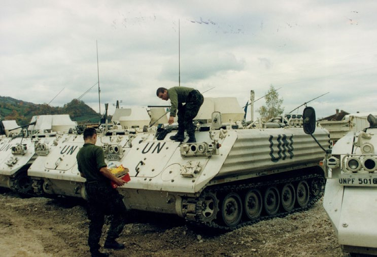
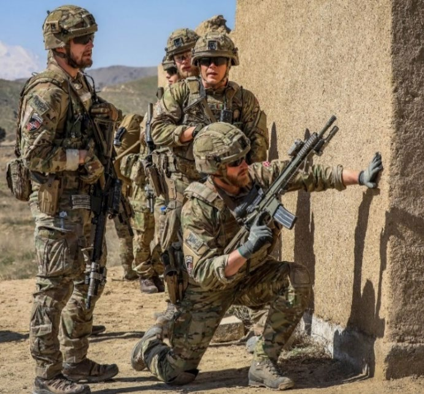
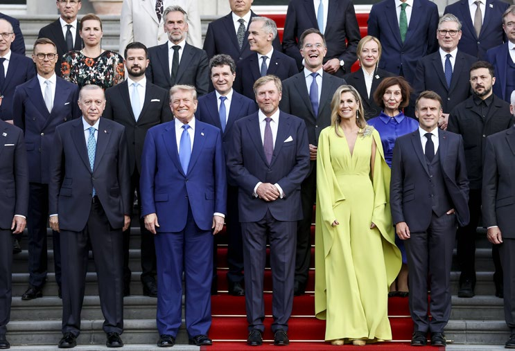
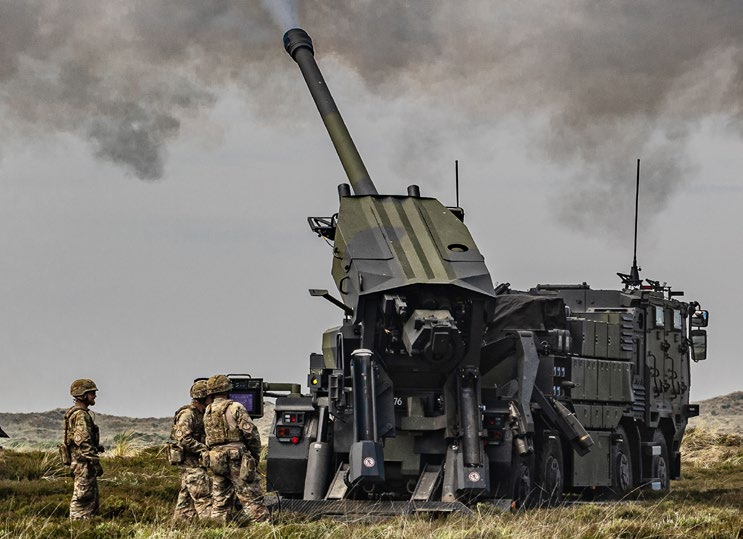
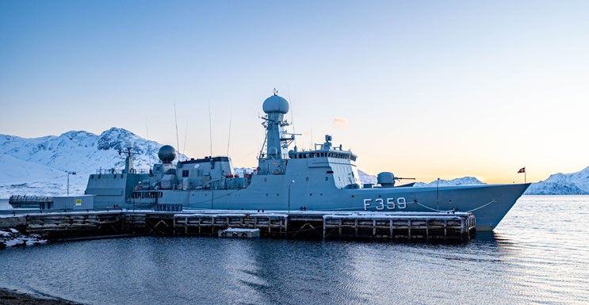

4.4 – DANMARKS UDENRIGS- OG SIKKERHEDSPOLITIK
sidde 136
Sikkerhedspolitik
Selv om Danmark med sin indtræden i NATO i 1949 opgav sin traditionelle neutralitet, holdt Danmark relativt lav militær profil frem til Den Kolde Krigs afslutning omkring 1990. Danmark deltog dog i mange af FN’s fredsbevarende missioner. Opgaven her var typisk dels at hjælpe med at sikre, at en våbenhvile blev overholdt og dels at beskytte civilbefolkningen.
UDENRIGSPOLITISK AKTIVISME EFTER DEN KOLDE KRIG (1990-2022)
Efter Den Kolde Krigs afslutning ændrede NATO’s mål sig gradvist. NATO forblev en forsvarsalliance. Men målet blev også i stigende grad at fremme fred, demo krati, menneskerettigheder og retsstatsprincipper rundt om i verden.
I den forbindelse spillede det en stor rolle, at NATO efter Den Kolde Krigs ophør har været verdens klart stærkeste militære og sikkerhedspolitiske alliance. NATO – anført af USA – var således mindre bekymret for at blive angrebet eller komme i væbnet konflikt med andre lande.
Og Danmark udviklede i forlængelse heraf lidt efter lidt en såkaldt 'aktivistisk udenrigspolitik'. Det betød, at Danmark begyndte at deltage mere aktivt i inter nationale konflikter, som gik ud over fredsbevarende missioner. Dette kom til udtryk på forskellig vis.
I 1990-91 besatte Irak nabolandet Kuwait. På baggrund af en FN-beslutning ledte USA en militær indsats, der skulle befri Kuwait. Danmark sendte et krigsskib af sted som et bidrag til den internationale militære styrke. Skibet deltog dog ikke i aktive kamphandlinger, men havde til opgave at håndhæve det internationale samfunds handelsblokade over for Irak.
I forbindelse med borgerkrigen i Jugoslavien i begyndelsen af 1990’erne blev danske soldater sendt ud som en del af FN’s styrker. Her blev de involveret i direkte kamphandlinger med serbiske styrker i Bosnien i 1994.
Læremateriale Til Indfødsretsprøven
sidde 137
Også i Kosovo, som dengang var en provins i Serbien, var der borgerkrig i slut ningen af 1990’erne. Her blev det albanske befolkningsflertal udsat for overgreb fra den serbiske regering. Efter lange forhandlinger uden resultat greb NATO militært ind i 1999. Her deltog danske kampfly i NATO’s aktioner.Danske FN-s
Danske FN-styrker i Bosnien.
INDSATSER EFTER TERRORANGREBET PÅ USA I 2001
Et vendepunkt for sikkerhedspolitikken i NATO-alliancen og herunder Danmark var terrorangrebet på USA 11. september 2001. Her slog terrorister omkring 3.000 mennesker ihjel ved at kapre passagerfly og flyve dem ind i blandt andet ”World Trade Center” i New York. Efter dette terrorangreb blev bekæmpelse af terrorisme en vigtig opgave for alliancen.
Efter terrorangrebet tog NATO et nyt skridt og besluttede at styrke sin evne til at bekæmpe enhver trussel mod medlemslandenes befolkninger, territorier og militære styrker. Dette gjaldt også terrortrusler fra terrorgrupper. Danmark har således siden 2001 deltaget i militære missioner rundt omkring i verden, der har haft fokus på disse målsætninger.
Terrororganisationen Al Qaeda, der stod bag angrebet på USA 11. september 2001, havde base i Afghanistan. Det gav anledning til, at styrker, ledet af NATO og med mandat fra FN, invaderede landet i oktober 2001 og afsatte den islami stiske Taliban-regering, som samarbejdede med Al Qaeda. I 2002 besluttede et stort flertal i det danske Folketing at sende danske soldater til Afghanistan for at deltage i krigen. Igennem 20 år førte Taliban guerillakrig mod de internationale styrker og den nye, vestligt støttede afghanske regering.
Læremateriale Til Indfødsretsprøven

sidde 138
De danske soldater blev blandt andet udstationeret sammen med britiske tropper i den sydlige Helmand-provins, der var en af de mest urolige i landet. I alt 44 danske soldater mistede livet under kampene. Efter 2014 var de danske udsendte soldaters opgave at træne og støtte afghanerne, så de selv kunne stå for sikkerheden i landet – og siden er de danske og andre landes soldater blevet trukket helt hjem. I takt med at de internationale styrker forlod Afghanistan, faldt landets rege ring og hær sammen. I august 2021 generobrede Taliban hovedstaden Kabul og dermed magten i landet. Vesten, herunder Danmark, iværksatte en historisk omfattende evakuering af egne diplomater, militære rådgivere samt af afghanere, der havde arbejdet for Vesten som for eksempel tolke under krigen.
I 2003 førte USA og en række andre lande krig mod Irak og landets diktator Saddam Hussein. Krigen var begrundet med, at Irak ikke levede op til sine forplig telser til militær nedrustning, som det var blevet pålagt af FN efter Golfkrigen i 1991. Desuden mente USA, at Irak ulovligt have udviklet masseødelæggelses våben. Der blev dog aldrig fundet nogen af disse masseødelæggelsesvåben. Denne krig var uden klart mandat fra FN, og det var heller ikke en NATO-mission. Krigen blev udført af en alliance af lande med USA i spidsen og med tilslutning fra blandt andet Storbritannien og Danmark. Flere NATO-medlemmer – blandt andet Tyskland, Frankrig og Norge – ønskede ikke at støtte krigen.
I Danmark var det kun et lille flertal i Folketinget, der stemte for Danmarks deltagelse i Irakkrigen. Saddam Hussein blev fjernet fra magten i 2003. Herefter skiftede fokus til at genopbygge Irak efter krigen, at skabe bedre levevilkår for irakerne igennem humanitære indsatser og at skabe demokrati. De danske soldater deltog i dette arbejde sammen med soldater fra andre lande. Dette arbejde har dog været vanskeliggjort af, at fjernelsen af Saddam Hussein udløste en opblussen af flere konflikter i Irak mellem landets forskellige etniske og religiøse grupper, herunder det sunnimuslimske mindretal (som Saddam Hussein kom fra) og det shiamuslimske flertal, som nu fik magten. Til tider har situationen i Irak lignet borgerkrig. I alt døde otte danske soldater i forbindelse med den amerikansk ledede intervention i Irak. Statsminister Mette Frederiksen og USA’s præsident
Danske tropper i Afghanistan.
Læremateriale Til Indfødsretsprøven

sidde 139
I 2011 udbrød et oprør mod Libyens diktator Muammar al-Gadaffi. Oprøret skete samtidig med oprør i flere nabolande, for eksempel Tunesien, Ægypten og Syrien, som blev kendt som 'Det Arabiske Forår'. Et enigt Folketing vedtog, at Danmark kunne deltage i et militært indgreb i Libyen. Indgrebet skulle – i overensstem melse med mandat fra FN – beskytte civilbefolkningen mod overgreb fra Gadaffi. Danmark leverede fly til aktionen og gennemførte adskillige bombardementer af Gadaffis hær og militære baser. Efterfølgende har Libyen været et ekstremt ustabilt land med svage regeringer, og hvor stridende grupper har været i noget, som bedst kan beskrives som en borgerkrig. Libyen er også blevet udgangs punkt for mange afrikanske migranter, som søger til Europa over Middelhavet.
NYT FOKUS PÅ DANSK TERRITORIALFORSVAR (2022- )
I de seneste år har USA og dets allierede igen vendt blikket væk fra at fremme fred, demokrati, menneskerettigheder og retsstatsprincipper rundt om i verden via militære aktioner. Det skyldes blandt andet den begrænsede succes med operationerne i for eksempel Irak, Afghanistan og Libyen, hvor det på langt sigt ikke lykkedes at opnå målsætningerne om at skabe fred og indsætte demokra tiske regeringer, som støtter Vesten.
Og ikke mindre væsentligt er der igen meget større fokus på et solidt og effektivt territorialforsvar. Det vil sige evnen til at kunne forsvare sit eget territorium mod et angreb fra andre lande.
Det skyldes en række forskellige forhold.
Helt afgørende for ønsket om at styrke de europæiske NATO-landes territorial forsvar har været, at forholdet mellem Vesten og Rusland har været præget af stadig flere konflikter de senere år.
Rusland har givet udtryk for, at det føler sine interesser krænket, fordi de fleste af Ruslands nabolande i Central- og Østeuropa, som var allierede med Rusland (Sovjetunionen) under Den Kolde Krig, siden 1999 er blevet optaget som medlemmer af NATO. Også tre lande i det tidligere Sovjetunionen – Estland, Letland og Litauen – er kommet med i NATO. Omvendt er fra NATO's side under streget, at landene er frie til at søge om optagelse i forsvarsalliancen. Desuden blev Warszawa-pagten og Sovjetunionen opløst (i 1991) med Ruslands egen accept.
De øgede spændinger har stor betydning for Danmarks sikkerhedspolitiske situation. Det skyldes ikke mindst, at Danmark er placeret ved Østersøen, som både NATO og Rusland betragter som et væsentligt interesseområde. Rusland har blandt andet truet med at angribe de tre baltiske lande Estland, Letland og Litauen. Og Forsvarets Efterretningstjeneste vurderer eksempelvis, at det er meget sandsynligt, at Rusland står bag forstyrrelse af navigationssignaler (GPS) over Østersøen.
Læremateriale Til Indfødsretsprøven
sidde 140
Siden 2014 har Rusland holdt halvøen Krim i Ukraine besat, ligesom Rusland har sendt våben og soldater til at støtte pro-russiske oprøreres kamp for at løsrive dele af det østlige Ukraine. Sidst men ikke mindst indledte Rusland i februar 2022 et omfattende militært angreb på Ukraine, der har ført til krig mellem den russiske og ukrainske hær og dermed store ødelæggelser og sendt millioner af ukrainere på flugt.
Som reaktion herpå har Vesten – herunder Danmark – støttet Ukraine med våben, træning og penge til at forsvare sig mod de russiske angreb. I denne sammen hæng er Danmark et af de lande i verden, der har hjulpet Ukraine mest og særligt set i forhold til størrelsen af Danmarks befolkning. Blandt andet har den danske regering i 2023 besluttet at donere 19 F-16-kampfly til Ukraine og træne piloter fra det ukrainske flyvevåben i at bruge flyene. Videre har Vesten forsøgt at svække den russiske økonomi med omfattende økonomiske sanktioner med udelukkelse af russiske banker fra det internationale betalingssystem SWIFT, forbudt salg af en række varer til Rusland samt besluttet at stoppe med at købe russisk olie. Mange vestlige virksomheder har trukket sig ud af Rusland.
En anden grund til oprustningen er, at USA har været utilfreds med, at de fleste europæiske NATO-lande lod sine forsvarsbudgetter falde en del efter Den Kolde Krigs afslutning. USA mener derfor, at europæerne har overladt for stor en del af regningen for Europas egen sikkerhed til USA, som brugte langt flere penge på forsvaret. Derfor blev NATO-landene i 2014 enige om, at hvert land skulle bruge to procent af deres bruttonationalprodukt (værdien af et lands samlede produk tion) på forsvaret. Og ambitionerne er vokset siden. I juni 2025 er målsætningen blevet hævet til fem procent.Stats- og regeringschefer til NATO-topmøde i Haag i Holland, 2025. Foto: R
Stats- og regeringschefer til NATO-topmøde i Haag i Holland, 2025. Foto: Ritzau Scanpix.
Læremateriale Til Indfødsretsprøven

sidde 141
Danmark har på den ene side været et af de NATO-lande, som efter Den Kolde Krig har været mest villig til at sende soldater til amerikansk ledede militære operationer i udlandet, for eksempel i Afghanistan og Irak.
Men omvendt brugte Danmark færre penge på forsvaret. Eksempelvis faldt Danmarks forsvarsbudget i perioden 1990-2015 fra 2,0 til 1,05 procent af brutto-nationalproduktet – langt under NATO’s målsætning om to procent. Og antallet af værnepligtige soldater faldt i samme periode fra cirka 10.500 til 4.300 om året. Endvidere blev pengene til forsvaret i stigende grad brugt på at kunne sende styrker ud til internationale opgaver frem for at forsvare Danmark. Det medførte en klar reduktion i antallet af soldater, samt at mange af forsvarets kaserner, flådestationer, og flyvestationer blev nedlagt.
Desuden ser USA's udenrigspolitik ud til at være under forandring. Blandt andet fordi Kinas magt vokser, og USA dermed i stigende grad prioriterer at imødegå konkurrencen fra Kina. Det sker blandt andet ved at flytte flere investeringer og mere militær til Asien og Stillehavet og til USA's eget nærområde. Det skaber usikkerhed om, i hvilket omfang USA fortsat vil deltage i forsvaret af Europa – ikke mindst mod et eventuelt angreb fra Rusland.
Som en følge af krigen i Ukraine, NATO's øgede målsætninger og de ændrede prioriteringer i amerikansk udenrigspolitik har Danmark og de andre europæ iske lande besluttet, at der skal bruges langt flere penge på forsvaret fremover, så vi bliver bedre til at forsvare os selv i tilfælde af et angreb.Genopbygningen af et stærkere forsvar af
Genopbygningen af et stærkere forsvar af det danske territorium er en vigtig opgave i disse år.
Læremateriale Til Indfødsretsprøven

sidde 142
De danske forsvarsudgifter er allerede i 2024 nået over to procent af bruttona tionalproduktet. Det gælder nu for alle 32 medlemslande i NATO. Sammenlagt har de europæiske NATO-lande øget forsvarsudgifterne fra 1,4 procent af brut tonationalproduktet (BNP) i 2014 til cirka 2,3 procent i 2025. Og der er afsat meget store yderligere beløb i de kommende år, der allerede i 2026 forventes at løfte Danmarks forsvarsudgifter til 3,5 procent af BNP. I samme periode er USA's forsvarsudgifter faldet fra 3,7 til 3,2 procent af BNP. Således er forskellen mellem de amerikanske og de europæiske forsvarsudgifter set i forhold til økonomiernes størrelse blevet betydeligt mindre.
De øgede økonomiske bevillinger skal blandt andet bruges til at købe mere og nyere materiel som flere kampvogne og kampfly samt undervands-torpedoer og avancerede forsvarssystemer, der kan nedskyde fjendtlige fly og missiler fra jorden. Desuden er det i 2024 besluttet, at der skal indkaldes flere soldater, således at antallet af værnepligtige soldater skal øges til 7.500 (fra ca. 5.200 i 2023), og at tjenestetiden for de fleste forlænges fra fire til 11 måneder.
RIGSFÆLLESSKABET, GRØNLAND OG ARKTIS I DANSK UDEN RIGSPOLITIK
Grønland, som er en del af det danske Rigsfællesskab, havde en særlig betyd ning under Den Kolde Krig. Grønland ligger tæt på både USA og det daværende Sovjetunionen. Man skulle i de fleste tilfælde flyve hen over Grønland for at tage den korteste rute mellem USA, Europa og Sovjetunionen. Den korteste vej for raketter i tilfælde af krig mellem USA og Rusland/Sovjetunionen går også hen over Grønland. Det gav øen en stor strategisk betydning i forhold til forsvars samarbejdet. I 1951 underskrev Danmark og USA en aftale om USA’s militære aktiviteter i Grønland. Samme år gik amerikanerne i gang med at anlægge en stor luftbase ved Qaanaaq (Thule) i det nordlige Grønland. På basen byggede USA også en radarstation, der kunne overvåge luftrummet over Grønland og farvan dene omkring Grønland. Basen var central for luftforsvaret af USA og NATO, og den bruges den dag i dag stadig af USA under navnet Pituffik Space Base.
Det varmere klima og afsmeltningen af isen i og omkring Grønland har øget landets strategiske betydning de seneste år. I Qaanaaq, nær basen, ligger verdens nordligste dybvands-havn, hvor vandet er dybt nok til, at store skibe kan lægge til. Og med det varmere klima og afsmeltningen af isen bliver det i stigende grad muligt at udvinde naturressourcer som sjældne jordarter, uran, olie, gas og mineraler i Grønland, der hidtil har været indefrosset. Hvis havet i Arktis i fremtiden bliver forholdsvis isfrit om sommeren, åbner det også for, at der kan etableres nye, kortere skibs-ruter via Det Arktiske Ocean mellem verdens kontinenter.
Læremateriale Til Indfødsretsprøven
sidde 143
Det danske inspektionsskib ’Vædderen’ patruljerer ved Grønlands kyst.
Det danske inspektionsskib ’Vædderen’ patruljerer ved Grønlands kyst.
Det arktiske område er derfor (via Grønland) igen kommet langt mere i centrum for dansk sikkerhedspolitik.
Stormagterne USA, Rusland og Kina er alle interesserede i områderne i Arktis på forskellig vis. Det gør, at Arktis i stigende grad præges af et anspændt forhold mellem disse lande. Det handler både om, at landene har interesse i at beskytte sig selv mod angreb fra andre, og om at landene har stigende økonomiske inte resser i for eksempel minedrift og transport af varer med skib.
De seneste år har den amerikanske præsident Donald Trump (født 1946) udtrykt ønske om, at Grønland skal blive en del af USA. Dette ønske er dog blevet afvist af både den grønlandske og den danske regering.
I Ilulissat-erklæringen fra 2008 har fem arktiske stater – Danmark/Grønland, Norge, USA, Canada og Rusland – dog erklæret sig enige om at samarbejde om fredelige relationer i Arktis. Men erklæringen blev udarbejdet i en helt anden international situation end i dag, idet forholdet mellem nogle af landene er blevet mere anspændt siden 2008.
For at styrke samarbejdet om bæredygtig udvikling i de arktiske områder inden for blandt andet miljø, klima, sundhed og søfart blev Arktisk Råd oprettet i 1996. Rådet har deltagelse af de lande, som har territorier i de arktiske egne. Det vil sige USA, Canada, Rusland og de fem nordiske lande. Herudover deltager seks organisationer, som hver især repræsenterer de oprindelige folk, herunder Inuit Circumpolar Council, ICC. Grønland og Færøerne har en stærk selvstændig stemme i Arktisk Råd. Grønland har en ledende rolle i Kongerigets aktuelle formandskab for Arktisk Råd (2025-2027).
Læremateriale Til Indfødsretsprøven

Fonte: Læremateriale til Indfødsretsprøven, SIRI.